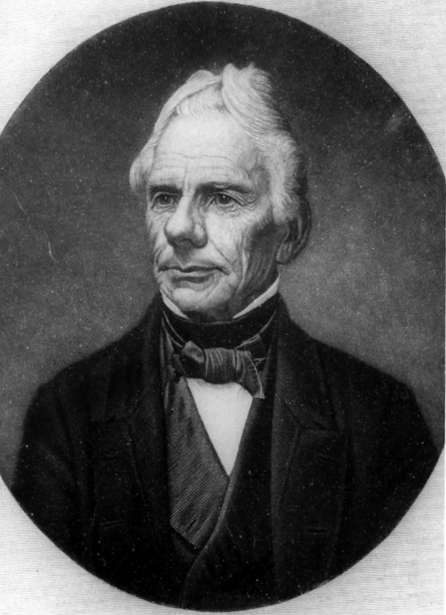
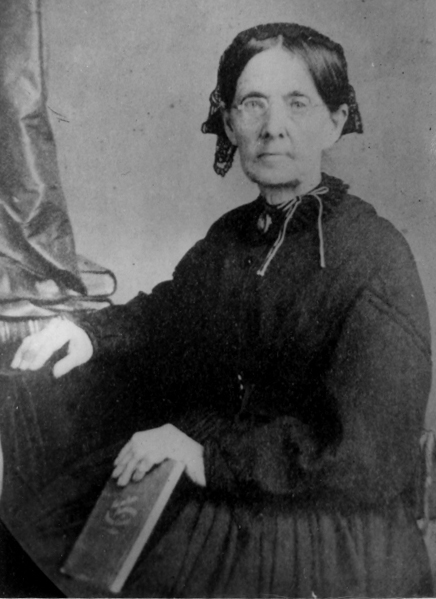

|  |  |
|
|
|
| Born in Ireland in 1788, Francis McFarland came to Pennsylvania with his parents in 1793. He attended the Princeton Theological Seminary, from 1817 to 1819, and served as a domestic missionary for a few years before serving as the Pastor of Bethel Presbyterian Church in Augusta County from 1823 to 1836, and again from 1841 to 1871. Bethel, and McFarland's farm Rosemont, were near Greenville in the southern portion of Augusta County. While engaged as an active pastor, McFarland also acted as a trustee of Washington College in Lexington, Virginia, as well as participating in countless meetings of the Lexington Presbytery, the Virginia Synod, and the General Assembly of the Presbyterian Church of the United States, which tied him closely to the religious and educational life of Augusta County. The 1860 election prompted him to vote for president for only the second time in his life and he later served in the General Assembly of the Presbyterian Church of the Confederate States. McFarland took an active interest in military affairs during the war, corresponding with his friend Thomas J. (Stonewall) Jackson, and McFarland's three sons in the Confederate Army (Francis, Robert, and James). McFarland's activities diminished as his health deteriorated late in the war; he died on October 10, 1871. |
|
the most likely matches in the Valley of the Shadow databases: |
McFarland Household: 1860 Census | 1870 Census
Military Records: Francis McFarland, Jr. | Robert P. McFarland | James N. McFarland
McFarland describes all aspects of his life during this period, discussing in great detail his health, the weather, and the state of his church, among various other topics. Most of the entries address his work on behalf of his church, including preaching at funerals, and his religious studies. As he notes in his diary, the 1860 presidential election prompted him to cast a vote for president for only the second time in his life.
Junkin writes to McFarland discussing views of fellow ministers on the question of secession.
Return to the Eve of War Personal Papers
McFarland continues to comment on all aspects of his life, detailing the weather, his health, and the life of his church in regular detail. He follows the progress of his three sons in the Confederate Army, details the death of his son Robert, and records his visits with Thomas J. (Stonewall) Jackson until Jackson was killed in 1862. McFarland also provides insight into the effects of the war on slavery in Augusta, commenting regularly on servants on his and other farms.
McFarland corresponds with several people, including his sons who are serving in the Confederate Army and his friend Thomas J. (Stonewall) Jackson. Often addressing religion, the letters also discuss slavery, the death of McFarland's son Robert, and the Confederate cause.
Return to the War Years Personal Papers
McFarland's entries slow after the war, as his health declined. He describes briefly how the family brought the remains of Robert, McFarland's son who died fighting for the Confederacy, back to Augusta County and his anguish at the loss of a child. He also notes having to send a man to talk to the Freedmen's Bureau agent in Staunton in order to respond to a complaint filed by a freedman employed by McFarland, and makes occasional comments about the process of Reconstruction.
Return to the Aftermath Personal Papers